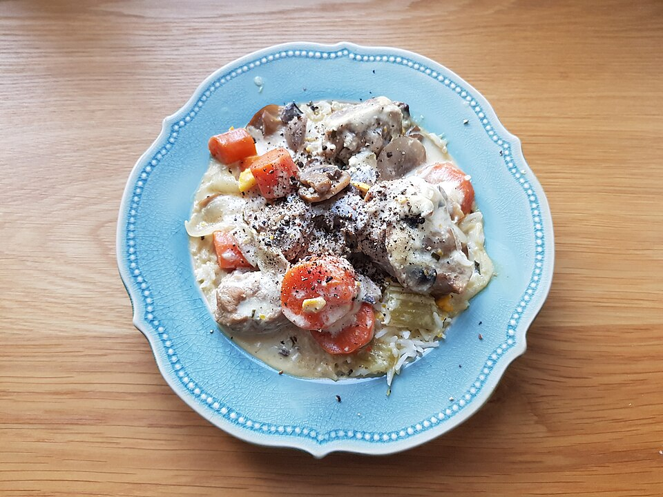

Home|
Recipes
Blanquette de Veau

Image source: WIKIMEDIA COMMONS
Description
Blanquette de veau is a luscious French classic—tender veal slowly simmered in a silky white sauce, enriched with cream and a touch of lemon.
With its delicate flavors, melt-in-your-mouth texture, and comforting warmth, it’s the ultimate cozy dish that feels both elegant and homey.
Bon appétit!
Ingredients
- 1 vegetable stock cube
- 2 carrots
- 1 yellow onion
- 1 small jar of crème fraîche (or heavy cream)
- Flour (for thickening)
- Salt
- Pepper
- 1 kg veal for blanquette
- 1 chicken bouillon cube
- 1 small can of chopped mushrooms
- 1 lemon
- 1 egg yolk
- 25 cl white wine
Steps
- Brown the veal pieces in a little soft butter until lightly golden.
- Sprinkle with 2 tablespoons of flour and stir well to coat.
- Add 2 to 3 glasses of water, the bouillon cubes, and the wine. Stir and add more water if needed to cover the meat.
- Slice the carrots and onion, then add them to the pot along with the mushrooms.
- Simmer over very low heat for about 1.5 to 2 hours, stirring occasionally.
- Add more water during cooking if necessary to maintain a gentle simmer.
- In a bowl, mix the crème fraîche, egg yolk, and lemon juice. Add this mixture to the pot at the last minute, stir well, and serve immediately.